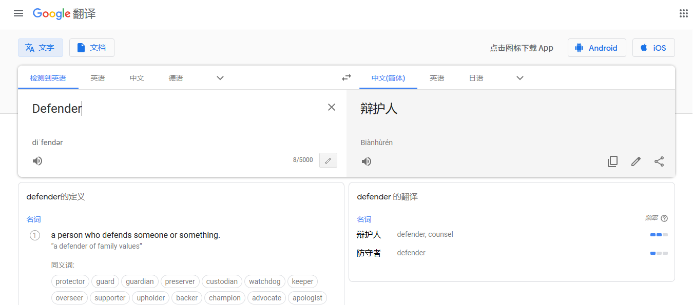
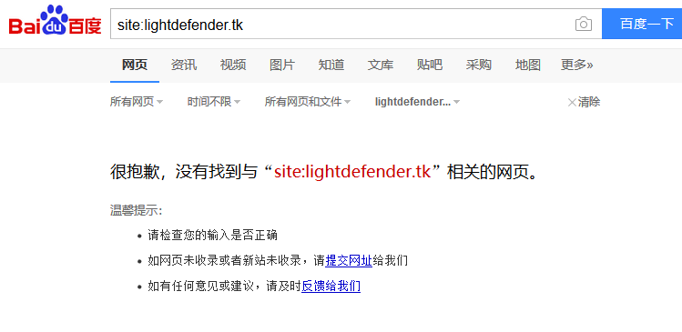

Q&A：
Q：为什么诸葛亮杀毒的英文名是Light Defender而不是别的？
A：他们其实连Defender是什么意思都不知道，只是单纯的看Windows Defender这个名字取的名。

Q：为什么域名是sb-lightdenfender.top而不是sb-lightdefender.top？
A：因为我们考虑到在f前面加个n就是nf=not found，嘲笑他们的论坛在百度无法获得收录，而我们的被收录了。

Q：为什么你们用的域名后缀是.top而不是.tk？
A：因为.top的域名比.tk高级很多，甩开了他们好几条街。
网站建设者：
E10402E3499552E06A93AF802F083AAC
9544A579CAA7A5B099EA88420E2FA284
（欢迎DDOS攻击带神前来解密~）